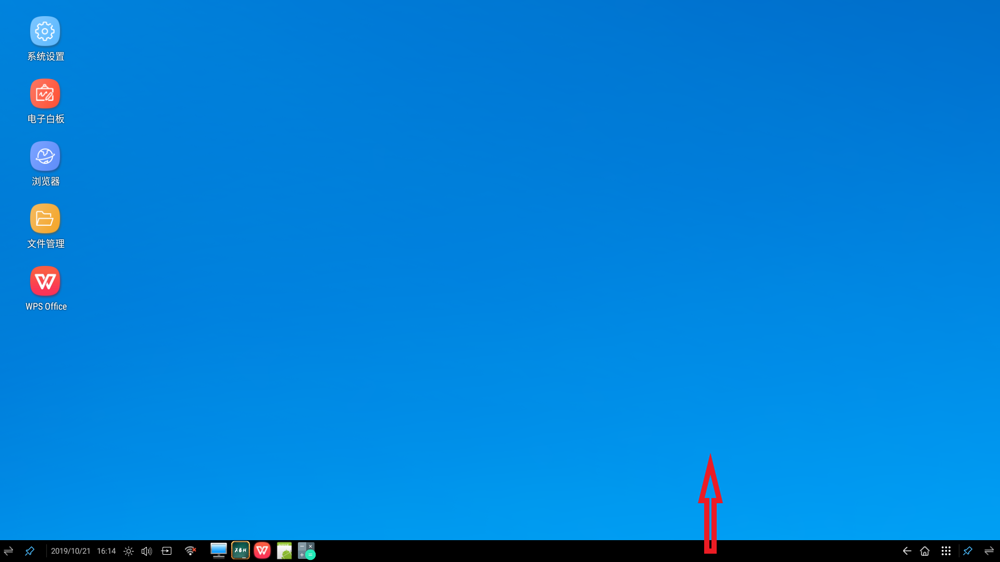
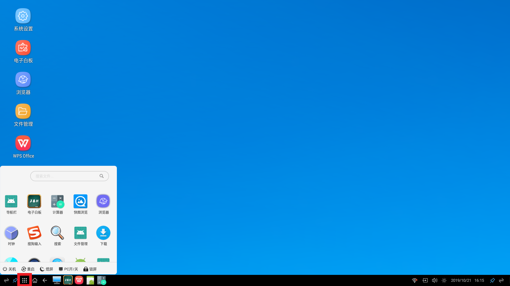
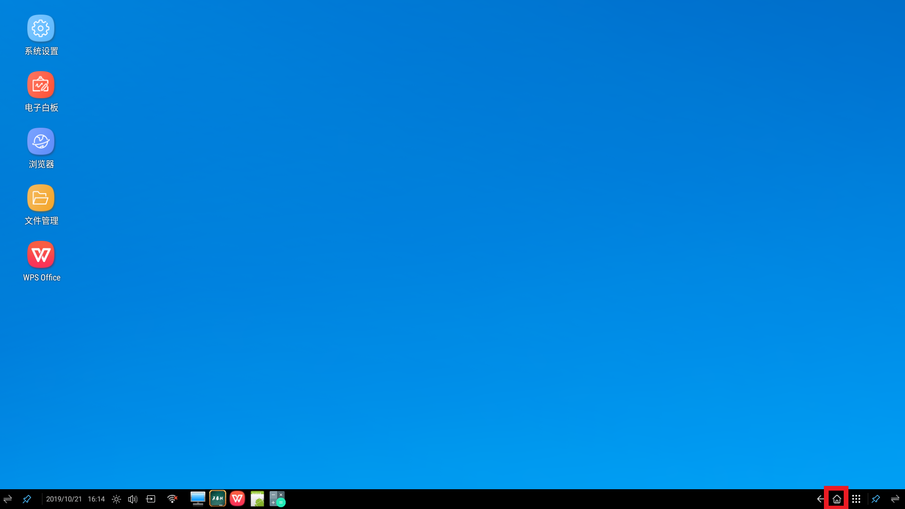
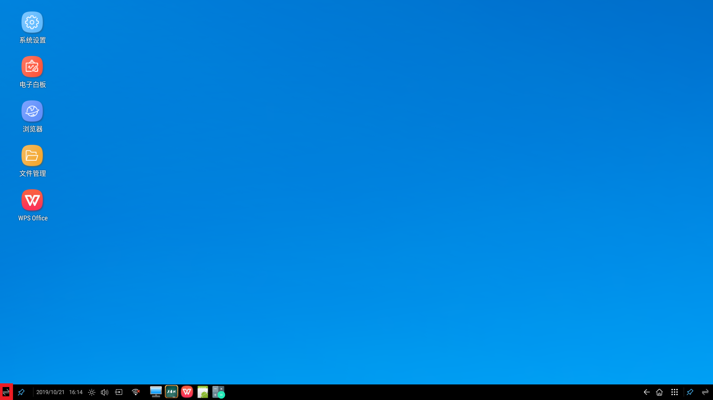
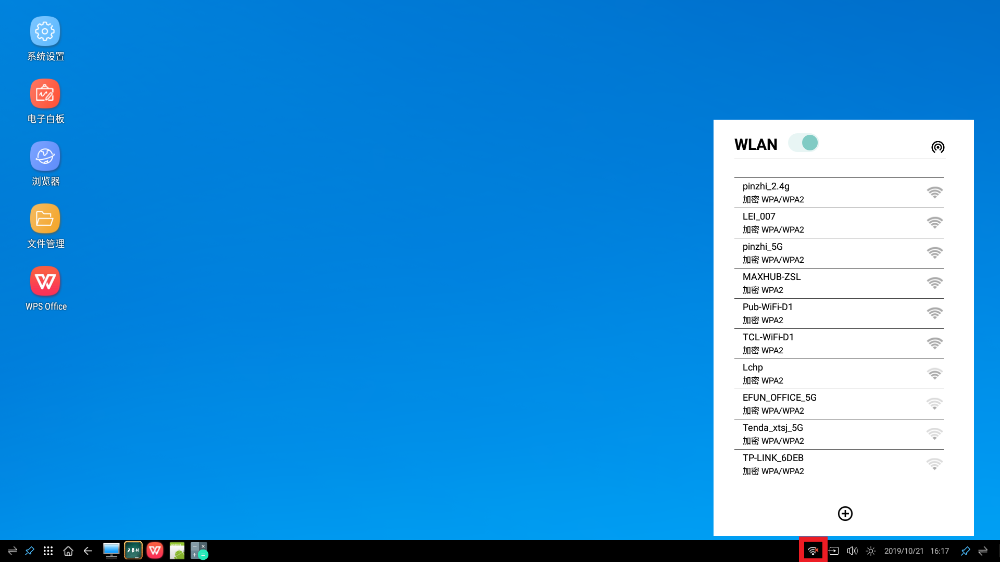
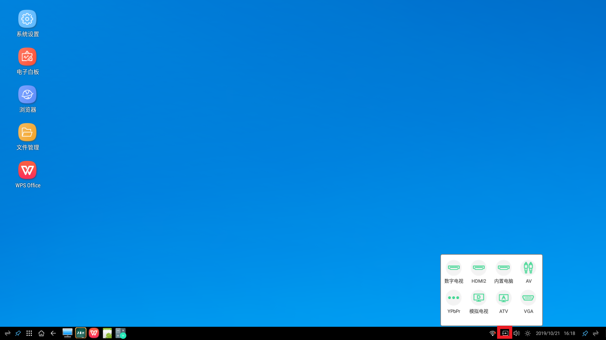
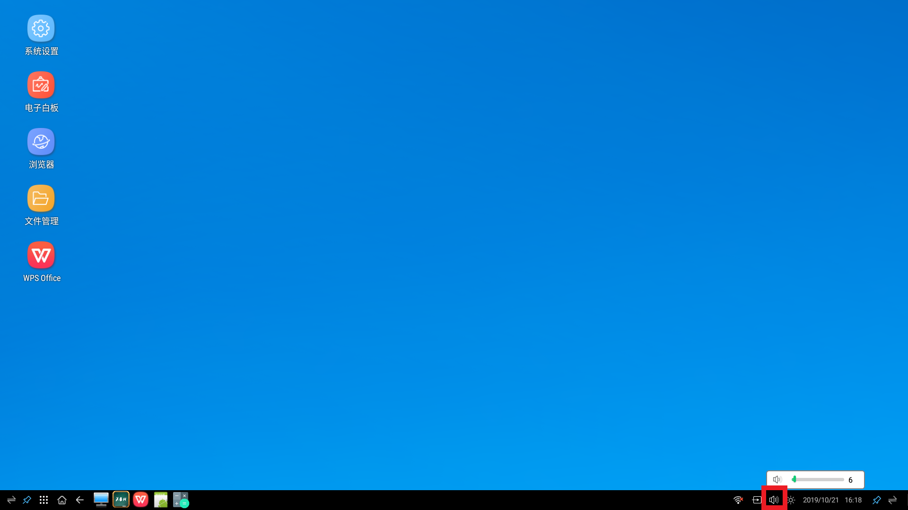
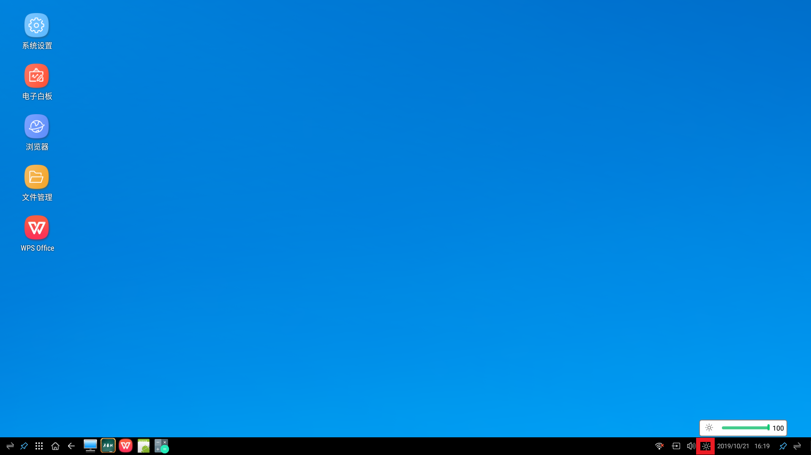
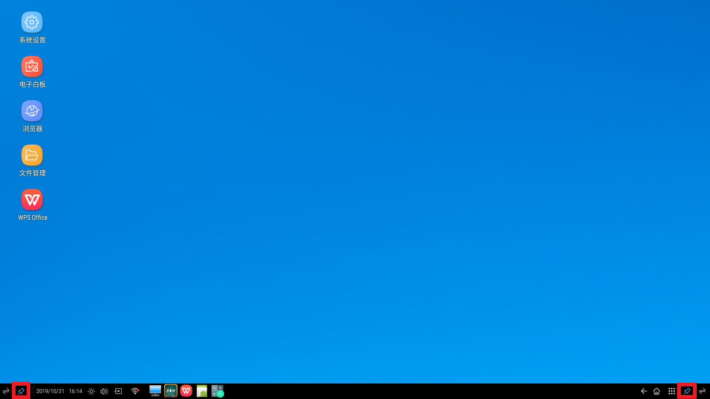

手指放在屏幕的下边沿，手指向上滑动，底部栏随即弹出
点击底部的如图所示的图标，进入应用界面，包含了本机内安装的应用，可快速从这里打开
点击底部的如图所示的图标，会离开当前所有应用，返回到主页
点击底部的如图所示的图标，会返回到原来的界面，一直按会返回到主页
点击底部的如图所示的图标，会交换底部栏的按钮
点击如图所示图标会弹出wifi的弹窗，可以在此打开wifi，查看当前的wifi的信息
点击如图所示图标会弹出切换信源的弹窗，可以在此切换信源
点击如图所示图标会弹出调整声音大小的弹窗，拖动进度条来调整声音的大小
点击如图所示图标会弹出调整亮度大小的弹窗，拖动进度条来调整亮度的大小
点击如图所示图标，图标会被选中，此时任务栏会被锁定，不会消失，如果没被锁定，则点击底部栏以外其它位置，底部栏隐藏
